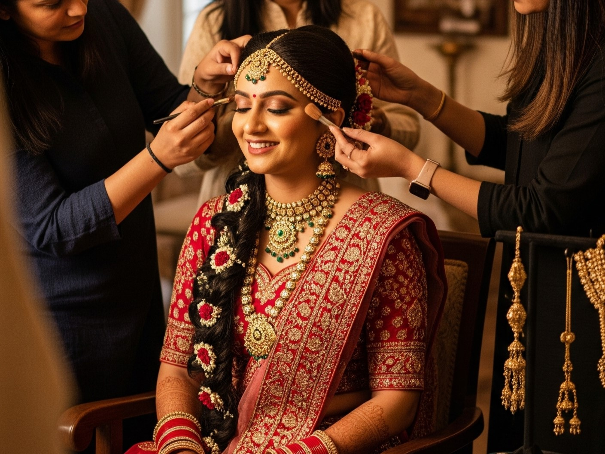

Wedding Day Prep: Your Ultimate Guide to a Stress-Free Morning
Posted on May 26, 2025 by Smita

The morning of your wedding should be filled with joyful anticipation, not stress and chaos. As an experienced bridal artist, I've seen what makes the difference between a hectic morning and a magical one. This comprehensive guide will walk you through every step to ensure your wedding morning is as beautiful and stress-free as you've always dreamed.
Table of Contents
Key Takeaway
Your wedding morning should be a joyful experience. The secret to a stress-free day is preparation - delegate tasks, create detailed timelines, and focus on being present. Remember that minor hiccups won't overshadow the magic of your celebration.
1 Week Before: Final Preparations
Proper planning during the final week ensures everything runs smoothly on your wedding day:
- Confirm Vendor Arrival Times: Reconfirm exact arrival times with your makeup artist, hairstylist, photographer, and videographer. Provide them with the wedding venue address and a contact number for the day.
- Create a Detailed Timeline: Map out your entire day from wake-up to ceremony. Include buffer time for unexpected delays (we recommend adding 15-30 minutes to each segment).
- Assemble Your Emergency Kit: Prepare a comprehensive kit with:
- Bobby pins, hairspray, and extra hair ties
- Safety pins, fashion tape, and a mini sewing kit
- Pain relievers, band-aids, and antacids
- Blotting papers, Q-tips, and makeup touch-up items
- Stain remover pen and static guard
- Any personal medications
- Break In Your Shoes: Wear your wedding shoes around the house with socks to soften them. Apply moleskin to potential friction points.
- Prepare Payment Envelopes: Have final payments ready in labeled envelopes for vendors who require payment on the day.
The Night Before: Setting the Stage
What you do the night before sets the tone for your wedding day:
- Early Dinner: Enjoy a light, early dinner with complex carbs and lean protein. Avoid salty foods that cause puffiness or spicy foods that might cause indigestion.
- Hydration Balance: Drink plenty of water throughout the day but taper off 2 hours before bedtime to prevent nighttime bathroom trips.
- Attire Preparation:
- Hang your wedding outfit on a padded hanger
- Place all accessories together in one box (jewelry, shoes, mangalsutra, bangles)
- Steam or press your outfit if needed
- Digital Detox: Turn off electronics at least an hour before bed. The blue light from screens can disrupt sleep patterns.
- Relaxation Ritual: Take a warm bath with Epsom salts, listen to calming music, or practice gentle stretching. Apply a hydrating face mask and lip treatment.
- Set Multiple Alarms: Set alarms on multiple devices to ensure you wake up on time. Ask a bridesmaid or family member to provide a wake-up call as backup.
Wedding Morning: Beauty & Glam

This is your time to shine! Follow these steps for a flawless beauty experience:
- Gentle Skincare Routine:
- Cleanse with a gentle, non-foaming cleanser
- Apply a hydrating serum (avoid anything with retinol)
- Use a lightweight moisturizer suitable for your skin type
- Apply eye cream to depuff and brighten
- Dress for Success: Wear a button-down shirt or wrap-front robe that won't disrupt your hairstyle when changing. Avoid pullover tops that might smudge makeup.
- Timeline Management:
-4 hoursHair styling begins (most time-consuming hairstyles first)-3 hoursMakeup application begins-1.5 hoursBride's hair and makeup completed
- Communication is Key: Show your artist any last-minute inspiration photos. Discuss any concerns about your trial look. Remember to sit still during critical application moments!
- Photography Prep: Designate a well-lit area near a window for getting-ready photos. Keep this area clutter-free with pretty hangers for outfits.
Wedding Morning: Logistics & Well-being
While you're being pampered, these logistics ensure everything runs smoothly:
- Nourish Your Body: Eat a balanced breakfast with protein, complex carbs, and healthy fats. Examples:
- Oatmeal with nuts and berries
- Poha or upma with vegetables
- Idli with sambar
- Fruit salad with yogurt
- Hydration Strategy: Sip water throughout the morning using a straw to prevent smudging lipstick. Include coconut water for electrolytes.
- Delegate Authority: Appoint specific roles:
- Vendor coordinator (greets and directs artists)
- Timeline keeper (keeps everyone on schedule)
- Emergency kit manager
- Food and beverage coordinator
- Create Ambiance:
- Play a curated playlist of calming or uplifting music
- Use essential oil diffusers with lavender or citrus scents
- Keep the space tidy and organized
- Have light snacks and beverages available
- Emotional Well-being:
- Practice deep breathing exercises (4-7-8 technique)
- Write a note to your partner to read before the ceremony
- Take a quiet moment with parents before the chaos begins
- Have tissues readily available for emotional moments
Bridal Emergency Kit Checklist
- Mini sewing kit (white thread, safety pins, needles)
- Stain remover pen and static guard
- Blotting papers and oil-control powder
- Lipstick/gloss for touch-ups
- Bobby pins and hair elastics matching your hair color
- Pain relievers and antacids
- Band-aids and moleskin for shoe blisters
- Double-sided fashion tape
- Mini deodorant and breath mints
- Phone charger and portable power bank
- Copy of wedding timeline and vendor contacts
The Final Touches
When your beauty services are complete, it's time for transformation:
- Dressing Protocol:
- Have 2-3 helpers for intricate outfits
- Use a clean sheet on the floor to prevent outfit from touching the ground
- Wear plastic gloves or cover hands with cloth to avoid makeup stains
- Step into your outfit rather than pulling it over your head
- Jewelry Application:
- Put on jewelry before final hair adjustments
- Use clear nail polish on necklace clasps to prevent unhooking
- Have a jewelry box for pieces you'll wear later in ceremonies
- Veil Placement: Your hairstylist should secure your veil after you're fully dressed. They'll know the perfect placement to complement your hairstyle.
- Photography Moments:
- Allow 15-30 minutes for "getting ready" photos
- Capture details: jewelry, shoes, invitation, perfume bottle
- Take bridal portraits before leaving for the venue
- Final Check: Do a full-length mirror check from all angles. Check for:
- Straight pallu and properly draped saree/lehenga
- Secure jewelry and properly positioned veil
- No makeup smudges or stray hairs
Special Considerations for Indian Weddings
Indian wedding traditions require additional preparation:
- Multiple Event Planning: For weddings spanning several days:
- Schedule trial runs for each event's look
- Create separate emergency kits for each function
- Plan outfit change timelines between events
- Mehndi Aftercare:
- Keep mehndi uncovered until completely dry
- Apply lemon-sugar solution periodically for darker stain
- Avoid water contact for at least 12 hours
- Traditional Rituals:
- Schedule haldi ceremony before hair/makeup
- Use coconut oil on hair and skin before haldi application
- Have a change of clothes for pre-wedding rituals
- Heavy Jewelry Comfort:
- Practice wearing heavy necklaces before the wedding
- Use padding on necklace backs for comfort
- Have duplicate lightweight jewelry for long events
- Cultural Timing: Account for auspicious timing (muhurat) in your schedule. Build in buffer time around these critical moments.
Vendor Coordination Timeline
Seamless vendor coordination ensures everything runs smoothly:
- Makeup artist arrives (first)
- Hairstylist arrives
- Photographer arrives (for getting-ready shots)
- Florist delivers bouquets and boutonnieres
Enjoy Your Day!
After months of planning, it's finally here! Remember:
- Embrace Imperfections: Something unexpected always happens at weddings. Laugh it off - these often become your favorite memories.
- Be Present: Take mental snapshots throughout the day. Notice the love in the room, the flowers, the music.
- Hydrate and Nourish: Designate someone to bring you water and snacks throughout the events.
- Trust Your Team: You've hired professionals - let them handle details while you enjoy your celebration.
- Connect with Your Partner: Find quiet moments to touch base with your partner throughout the festivities.
At Smita's Glam World, we specialize in creating stress-free wedding mornings. Book our bridal beauty services for expert hair, makeup, and coordination that lets you relax and enjoy every moment of your special day.
Final Thought
Your wedding day is the beginning of your marriage, not the culmination. However perfect or imperfect the day may be, what truly matters is the love you're celebrating and the commitment you're making. Breathe, smile, and step into your new life with joy!